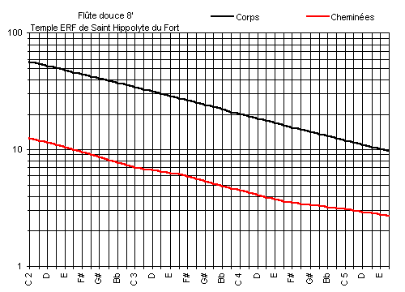

Saint-Hippolyte-du-Fort (Gard, FRANCE)
Grand Temple de l'Église Réformée
Clavier : |
Récit |
Jeu : |
Flûte douce 8' |
[ Tailles du jeu ]
- Ce jeu, prévu par Beaucourt et Voegeli en 1853 a été
installé lors de la restauration de Laurent PLET en 1992.
- Il est entièrement neuf, à cheminées, de la taille du Cornet de
Grand Orgue (avec des calottes mobiles)
- Cette taille se retrouve aussi dans la Flûte douce du Récit de l'orgue
de Notre-Dame-des-Pommiers de Beaucaire, mais a deux tuyaux de même
diamètre par note, un ouvert et un bouché.
- Aucun tuyau ne comporte de frein harmonique.
